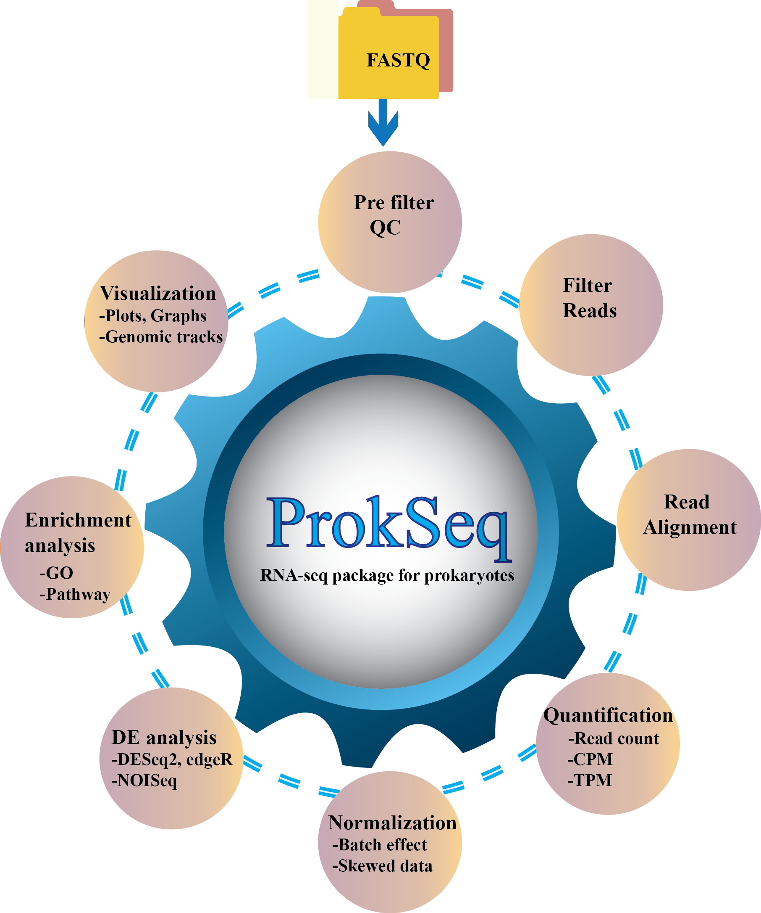

ProkSeq’s documentation!¶
ProkSeq is an automated RNA-seq data analysis package for Prokaryotic, where users can perform all the necessary steps of RNA-seq data analysis from quality control to pathway enrichment analysis. It has a wide variety of options for differential expression, normalized expression, visualization, and quality control, and publication-quality figures. It is also less time consuming as the user does not need to observe and control the analysis process. The user needs to specify the descriptions of the samples and define the parameter file accordingly. ProkSeq also automatically do the quality filtering of the bad reads and run the analysis on good quality reads.
{kind=link}
DOWNLOAD:¶
The pipeline can be obtained from the following repositories. [GitHub], [Docker], and [Anaconda Cloud].
DOCKER:¶
We strongly recommend using docker to run the pipeline. The external dependencies and R dependencies are all bundled in the container. The container prokseq-v2.1:v1 is available in https://hub.docker.com/repository/docker/snandids/prokseq-v2.1
Step 1: To pull the image from the Docker Hub registry:
docker pull snandids/prokseq-v2.1:v1
Step 2: To Run
docker run -it snandids/prokseq-v2.1:v1
sh-5.0# cd prokseq
Step 3: Activate the environment
sh-5.0# source /etc/profile.d/conda.sh
sh-5.0# conda activate py36
(py36) sh-5.0# <YOU WILL GET THIS PROMPT>
Step 4: Run the example Run the pipeline with the example files
(py36) sh-5.0# python scripts/prokseq.py -s samples.bowtie.PEsample -p param.bowtie.yaml -n 4
The script will run with PE (paired-end) samples described in samples.bowtie.PEsample, and with the parameters defined in param.input.yaml. The program is submitted with four processors.
Step 5: How to manage data within your Docker containers.
A. Method 1 - Using volume mounts <br/>
B. Method 2 - Docker cp
A. Method 1:
docker run -it -v /home/user/prokseqData:/root/prokseq/ --name PROKSEQ snandids/prokseq-v2.1:v1
sh-5.0# cd prokseq
sh-5.0# source /etc/profile.d/conda.sh
sh-5.0# conda activate py36
(py36) sh-5.0# <YOU WILL GET THIS PROMPT>
(py36) sh-5.0# python scripts/prokseq.py -s samples_def_file -p param_def_file -n 4
Once done, the user can exit the docker.
(py36) sh-5.0# exit
The output will remain in the /home/user/prokseqData.
To remove the container.:
> docker container rm PROKSEQ
B. Method 2:
docker ps -a
Output (somewhat similar)
1 2 | CONTAINER ID IMAGE COMMAND CREATED STATUS PORTS NAMES
8f780c0a9969 snandids/prokseq-v2.1:v1 "sh" 5 minutes ago Up 5 minutes fervent_feynman
|
docker cp test.fasta 8f780c0a9969:/root/prokseq/test.fasta
(py36) sh-5.0# touch TEST.txt
OR
sh-5.0# touch TEST.txt
Step 2: Copy the created new file from the container to the local working directory. From another termnal run,:
docker cp 8f780c0a9969:/root/prokseq/TEST.txt .
CONDA:¶
Step 1: Fetch the package.:
conda install -p <PATH_TO_DOWNLOAD> -c <CHANNEL> prokseq
Example:
mkdir testPrseq
conda install -p /home/user/testPrseq -c snandids prokseq
Step 2: Once the package is obtained, run the following commands.:
tar -xvzf exampleFiles.tar.gz
Step 3: Install dependencies.:
tar -xvzf depend.tar.gz
A depend folder will be created with all the required dependencies. Most of these packages were compiled on architecture x86_64 Fedora 31. Users may have to recompile some of them.
Install the R and the R bioconductor packages.
Though the pipeline is written in Python3.6, but some packages included in the pipeline require Python2.7. Therefore, it is advised to install Python2. The program should find python2 and python (python3) in the env PATH. To make life easier, we recommend create environment (Step 4).
Step 4: Create virtual environment:
conda create -n yourenvname python=3.6
conda activate yourenvname
conda install pandas
pip2.7 install numpy
pip2 install qc bitsets RSeQC
pip2 install --upgrade cython bx-python pysam RSeQC numpy
Step 5: Once all the dependencies and R packages are installed, and the example files are untared, change the PATH in parameter file (Eg. param.input.bowtie). The PATH should point to the packages.
For example: If you are using the above-mentioned path [/home/user/testPrseq] from Step 1, then specify the path as below for all the packages in the parameter file.
1 2 | # Specify the path to pypy required for running afterqc
PATH PYPY /home/path/testPrseq/depend/pypy2.7-v7.2.0-linux64/bin
|
Then run the following command to test run the pipeline.:
python scripts/pipeline-v2.8.py -s samples.bowtie.PEsample -p param.bowtie.yaml -n 4
Description: The script is running with PE (paired-end) samples described in samples.bowtie.PEsample, and with the parameters defined in param.bowtie.yaml. The program is submitted with four processors.
To remove::
conda remove -p /home/path/testPrseq prokseq
CHECK TEST RUN:¶
After setting up of the depend directory, one can check if the environment is all setup. The required fastq and other required files for the check run is bundled in exampleFiles.tar.gz. Therefore, this file should be untared or at least should be there in the current working directory. The check script can be run as follows.:
python scripts/runCheck.py
Default directory layout should look like below:¶
1 2 3 4 5 6 7 8 9 10 11 12 13 14 15 16 17 18 19 20 21 22 23 24 25 26 27 28 | .
./README.md
./depend/afterqc
./depend/bowtie2
./depend/FastQC
./depend/pypy2.7-v7.2.0-linux64
./depend/readFasta
./depend/RSeQC-2.6.2
./depend/salmon-latest_linux_x86_64
./depend/samtools
./depend/samtools-1.10
./depend/subread-1.4.6-p5-Linux-i386
./depend/wigToBigWig
./scripts/prokseq.py
./scripts/runCheck.py
./scripts/prokseq-vT1.py
./scripts/plotScript.R
./scripts/gff3_2_gtf.sh
./scripts/gtf2bed.sh
./scripts/setup.sh
./scripts/samtools.sh
./scripts/libmod
./scripts/libmod/checkEnv.py
./scripts/libmod/errMsgFn.py
./scripts/libmod/execCmd.py
./scripts/libmod/__init__.py
./scripts/libmod/pipeFunc.py
./scripts/libmod/__pycache__
|
Example files layout:¶
1 2 3 4 5 6 7 8 9 10 11 12 13 14 15 16 17 18 19 20 21 22 | ./sampleCtrl_1.R1.fq
./sampleCtrl_1.R2.fq
./sampleCtrl_2.R1.fq
./sampleCtrl_2.R2.fq
./sampleCtrl_3.R1.fq
./sampleCtrl_3.R2.fq
./sampleTreat_1.R1.fq
./sampleTreat_1.R2.fq
./sampleTreat_2.R1.fq
./sampleTreat_2.R2.fq
./sampleTreat_3.R1.fq
./sampleTreat_3.R2.fq
./samples.bowtie.PEsample
./samples.bowtie.SEsample
./samples.salmon.PEsample
./samples.salmon.SEsample
./param.bowtie.yaml
./param.salmon.yaml
./oldAnnotationGFF.bed
./oldAnnotationGFF.gtf
./orf_coding_all.fasta
./SequenceChromosome.fasta
|
REQUIRMENTS:¶
Users can run the ProkSeq program to see which depending packages are missing. By default, ProkSeq will search for required programs and print the availability of the program.
ProkSeq requires the following packages:
EXTERNAL TOOLS:¶
Package/program : Purpose
--------------- -------
FastQC : Quality check
Bowtie : Aligning the reads
Pypy : For speed and memory usage we sometimes
uses pypy an alternative implementation
of python 3.6
featureCounts
from subread : Counting reads to genomic features such as
genes, exons, promoters, and genomic bins.
AfterQc : Automatic filtering trimming of the fastq
sequences.
Samtools : For post-processing of the SAM and BAM
reads alignment files.
Salmon : A tool for wicked-fast transcript
quantification from RNA-seq data.
The dependencies mentioned above are essential. However, the executable binaries are bundled in the folder “depend”. If the user is fetching the package from github [https://github.com/snandiDS/prokseq-v2.1], then the user will get a script [setup.sh] inside the depend folder. Please run this script as:
sh setup.sh
This script will fetch the required dependencies from http://www.fallmanlab.org. The script will also ask if the user wants to compile samtools. After running the script and accepting Y for compiling the samtools, the output on the screen would be as follows:
-- Viewing
flags explain BAM flags
tview text alignment viewer
view SAM<->BAM<->CRAM conversion
depad convert padded BAM to unpadded BAM
This means the program ran successfully.
R packages:¶
R packages : Purpose
-------- -------
ggplot2 : A system for declaratively creating graphics,
based on The Grammar of Graphics.
Bioconductor Packages: Purpose
--------------------- -------
DESeq2 : Differential gene expression analysis based
on the negative binomial distribution.
edgeR : Package for examining differential expressi-
on of replicated count data.
NOISeq : A non-parametric approach for the different-
ial expression analysis of RNseq-data.
limma : A package for the analysis of gene expressi-
on data arising from microarray or RNA-seq
technologies.
clusterProfiler : To analyze functional profiles of genomic
coordinates (supported by ChIPseeker), gene
and gene clusters.
apeglm : The adaptive t prior shrinkage estimator
used to Shrink log2 fold changes.
RUVSeq : Remove Unwanted Variation from RNA-Seq Data
RColorBrewer : Required to create nice looking color palettes
especially for thematic maps, used with RUVSeq.
reshape2 : To transform data between wide and long formats.
PYTHON LIBRARIES:¶
This program is written in python 3.6, and uses the following python libraries. os, subprocess, re, pandas, optparse, math, threading. These libraries may be installed using pip.
RUNNING PROKSEQ:¶
SYNTAX:¶
Usage: prokseq.py [options] arg
Options:
-h, --help show this help message and exit
-s SAMPLE_FILE_NAME, --sample=SAMPLE_FILE_NAME
provide the sample file
-p PARAMETER_FILE_NAME, --param=PARAMETER_FILE_NAME
provide the parameter file
-n NUMBER OF PROCESSORS, --numproc=NUMBER OF PROCESSORS
provide the number of processors
-v, --version Version of the package
EXAMPLE:¶
python scripts/prokseq.py -s samples.bowtie.PEsample -p param.bowtie.yaml -n 4
The program will run with sample file “samples.bowtie.PEsample”, and parameter file “param.bowtie.yaml”. The program will also utilize 4 processors.
To run the program, the dependencies mentioned above are essential. However, the executable binaries are bundled in the folder “depend”. The details of the parameter and the sample files are as below. An example parameter (param.bowtie.yaml) and sample file (samples.bowtie.PEsample) are bundled together with the package in the exampleFiles.tar.gz.
PARAMETER FILE:¶
There should be one parameter file. The entries of the file should be as follows.
1 2 3 4 5 6 7 8 9 10 11 12 13 14 15 16 17 18 19 20 21 22 23 24 25 26 27 28 29 30 31 32 33 34 35 36 37 38 39 40 41 42 43 44 45 46 47 48 49 50 51 52 53 54 55 56 57 58 59 60 61 62 63 64 65 66 67 68 69 70 71 72 73 74 75 76 77 78 79 80 81 82 83 84 85 86 87 88 89 90 91 92 93 94 95 96 97 98 99 100 101 102 103 104 | ####################################################################
# File "param.yaml" - definition file in YAML format. Define
# the paths and parameters to run the external packages. All
# the default parameters are considered. However, if users wish
# to modify any default parameters, please specify here.
# NOTE: Any flag/parameter which do not require any value,
# specify "TRUE"/"FALSE." Quotes are necessary. "TRUE" to
# invoke the flag and "FALSE" to suppress.
####################################################################
# Describe the Bowtie options below as:
BOWTIE:
-I : 0
-X : 500
-k : 1
-p : 1
# In case the package salmon is to be run, uncomment the
# following options. These are the default values.
# These options will overwrite the BOWTIE parameters.
#
#SALMON:
# SALMONINDEX:
# -k : 29
# SALMONQUANT:
# -l : A
# -p : 2
# --validateMappings : "TRUE"
#
# Define the parameters for AfterQC. Example default parameters
# are shown as bellow. All the default parameters are taken.
# Specify the parameter and value in case of any changes. One can
# add the other parameters with value.
#AFTERQC:
# -s : 35
# -n : 5
# -p : 35
# --debubble : "TRUE"
# -a : 5
#
# Define the Featurecounts options as bellow:
FEATURECOUNTS:
a : oldAnnotationGFF.gtf #Define the Featurecounts input GTF file.
o : FeatCount #Define the Featurecounts output file name.
#
# Specify a count file name
COUNTFILE : countFile.csv
#
# geneBody coverage.r require a bed file. Specify the name of bed file as bellow:
geneBody_coverage:
r : oldAnnotationGFF.bed
#
# Specify if batch effect removal is required. FALSE if not required, else TRUE.
BATCH_EFFECT_REMOVE : "FALSE"
#
#Remove Unwanted Variation from RNA-Seq Data
#To run RUVSeq, uncomment the following two lines.
RUVSeq:
nc : 100 #Integer - Top 100 genes as ranked by edgeR p-values. Negative control genes to estimate the factors of unwanted variation.
#
# Parameters for pathway analysis.
# For pathway analysis, define the organism in three alphabets as bellow.
# ypy = Yersinia pseudotuberculosis
# User need to change the keg abbreviation of their genome which can be
# found in https://www.genome.jp/kegg/catalog/org_list.html. Here ypy is
# the Yersinia pseudotuberculosis YPIII
# If PATHWAY analysis is not required comment out the PATHWAY section.
PATHWAY:
cutoffPositive : 2.0 #logfold upper limit
cutoffNegative : -2.0 #logfold lower limit
Organism : ypy
# For Gene Ontology of the pathway analysis, define GO term and gene name file.
TERM2GENE : data/TERM2GENE.csv
TERM2NAME : data/TERM2NAME.csv
#
# Specify the root path. That means where the ProkSeq bundle is unpacked.
# The PATH ROOT : should indicate the current working directory.
# The location should have the following folders
# 1. depend - contains all the binaries of the external packages
# 2. scripts - contains all the modules required for ProkSeq, and pipeline-vx.x.sh
# 3. data - Contains Gene ontology files for pathway analysis.
# 4. Fastq files, and other genome/transcript files.
# If the package is stored in the folder/path /home/user/PROKSEK
PATH ROOT : /home/user/PROKSEK
# If the above environment (depend, scripts, data) is true, the following
# line maye uncommented.
#PATH DEFAULT : "TRUE"
# Specify the path to samtools
PATH SAMTOOLS : /home/user/PROKSEK/depend/samtools/bin
# Specify the path to geneBody_coverage
PATH geneBody_coverage : /home/user/PROKSEK/depend/RSeQC-2.6.2/scripts/
# Specify the path to FEATURECOUNTS
PATH FEATURECOUNTS : /home/user/PROKSEK/depend/subread-1.4.6-p5-Linux-i386/bin/
# Specify the path to fastqc
PATH FASTQC : /home/user/PROKSEK/depend/FastQC
# Specify the path to bowtie
PATH BOWTIE : /home/user/PROKSEK/depend/bowtie2/bowtie2-2.3.5.1-linux-x86_64
# Specify the path to salmon if salmon is required
#PATH SALMON : /home/user/PROKSEK/depend/salmon-latest_linux_x86_64/bin
# Specify the path to pypy required for running afterqc
PATH PYPY : /home/user/PROKSEK/depend/pypy2.7-v7.2.0-linux64/bin
# Specify the path to readfasta
PATH READFASTA : /home/user/PROKSEK/depend
#
# End of file "param.input"
#
|
In general, the entries starting with BOWTIE instructs the program to run the tool with the additional parameter. Similarly SALMON, AFTERQC, FEATURECOUNTS, etc. Entries beginning with PATH indicates the path to the executables of the external tools. If one uses the bundled packages in the depend folder, PATH DEFAULT : TRUE line should be uncommented. Note PATH ROOT : path_to_the_current_working_directory should be mentioned.
NOTE: The program will override the Bowtie options, and the package salmon will be run if both bowtie and salmon’s options are provided. Therefore, if salmon is required, please comment on the Bowtie option lines, and vice versa.
SAMPLE FILE:¶
Sample file is required for the program. This file should have the following format. Please don’t change the format of the file. Simply replace the fastq, sam and the conditions of the sample.
1 2 3 4 5 6 7 8 9 10 11 12 13 14 15 16 17 18 19 20 21 | ###################################################################################
# File "sample" - sample description file
# Specify the names of the sample files and tag them as "treat" and "control".
###################################################################################
# Specify the genome file, and specify the path where the
# indexed file will be stored, and the prifex of the indexed genome.
# Default is 'bowtie2_genome'.
GENOME SequenceChromosome.fasta bowtie2_genome/sequenceChr
# Specify the fastq files
# Specify the output name of the sam files.
# Followed by the tag/class/condition of the sample (treated or control)
# List all the fastq files as below.
FASTQ sampleTreat_1.R1.fq sampleTreat_1.R2.fq sampleTreat_1.sam treat
FASTQ sampleTreat_2.R1.fq sampleTreat_2.R2.fq sampleTreat_2.sam treat
FASTQ sampleTreat_3.R1.fq sampleTreat_3.R2.fq sampleTreat_3.sam treat
FASTQ sampleCtrl_1.R1.fq sampleCtrl_1.R2.fq sampleCtrl_1.sam control
FASTQ sampleCtrl_2.R1.fq sampleCtrl_2.R2.fq sampleCtrl_2.sam control
FASTQ sampleCtrl_3.R1.fq sampleCtrl_3.R2.fq sampleCtrl_3.sam control
#
# End of file "sample"
#
|
In case of SALMON:
1 2 3 4 5 6 7 8 9 10 11 12 13 14 15 16 17 18 19 20 21 | ###################################################################################
# File "sample" - sample description file
# Specify the names of the sample files and tag them as "treat" and "control".
###################################################################################
# Specify the genome file and specify the path where the
# indexed file will be stored, and the prifex of the indexed genome.
# Default is 'transcripts_index'.
GENOME orf_coding_all.fasta transcripts_index
# Specify the fastq files
# Specify the output name of the quant files.
# Followed by the tag/class/condition of the sample (treated or control)
# List all the fastq files as bellow.
FASTQ sampleTreat_1.R1.fq sampleTreat_1.R2.fq sal_quant1 treat
FASTQ sampleTreat_2.R1.fq sampleTreat_2.R2.fq sal_quant2 treat
FASTQ sampleTreat_3.R1.fq sampleTreat_3.R2.fq sal_quant3 treat
FASTQ sampleCtrl_1.R1.fq sampleCtrl_1.R2.fq sal_quant4 control
FASTQ sampleCtrl_2.R1.fq sampleCtrl_2.R2.fq sal_quant5 control
FASTQ sampleCtrl_3.R1.fq sampleCtrl_3.R2.fq sal_quant6 control
#
# End of file "sample"
#
|
DATA FILES:¶
1. Samples files in fastq format.
2. Pathway analysis (Optional):
1. TERN2GENE.csv
Gene Ontology to terms mapping csv file (Eg: GO:0000001,mitochondrion inheritance). This is
genome specific Gene ontology file. TERM2GENE.csv is a comma delimited 2 column file.
First column is the GO term and second column is the gene name. User can download the GO file
or GFF annotation file from Genome2D webserver
(http://genome2d.molgenrug.nl/g2d_core_select_genbank.php)
2. TERM2NAME.csv
Gene Ontology to gene mapping csv file (Eg: GO:0003688,YPK_0001). This is the GO term
classification which is common for all organisms.
3. For Bowtie implementation:
Genome file in fasta format
For Salmon implementation:
Transcript file in fasta format
4. GTF file
5. Bed file
All these files should be declared in SAMPLE FILE and PARAMETER file.
OUTPUT:¶
ProkSeq produces several folder with analysis results as a Output folder.
The structure of the Output directory looks like
alignmentFile
bam
countAndExpression
DiffExpResults
genomeBrowserFile
PathwayEnrichment
plots
QC_afterFilter
QC_preFilter
1. QC_preFilter:¶
fastQC out put html file
2. QC_afterFilter:¶
Remove bad quality read and filter good quality reads. It contains three subfolder
FilteredReads: good quality filtered fastq files
QCfastQ_filtered : quality checking html file of filtered reads
RemovedReads: Bad quality reads that is removed for analysis
3. alighmentFile:¶
.sam: Sequence Alignment file generated from bowtie2/salmon
sam.alignSummary: Alignment summary information/statistics of the alignment of individual sample to the reference genome.
4. countAndExpression:¶
Depending on the file names provided in the parameter file for the ‘Featurecounts output file’ and ‘COUNTFILE’.
Count.csv : The file contains total count according to genomic features
countFile_TPM_CPM.csv : The file contains total count according to genomic features as well as Count per miillion(CPM), and Transcript per million (TPM)
countFile.NucleotideAvgCount.csv : THis file contains Average nucleotide expression per gene as well as other total count, CPM and TPM.
5. DiffExpResults:¶
DESeq2_results.txt: Differential expression results from DESeq2
DESeq2lfcShrink_results: Differential expression results from DESeq2 with Log2 Fold Shrinkage
edgeR_results.txt: Differential expression results from edgeR
afterNoiseq.txt: Differential expression results from NOISeq
RUV_DESeq2_results.txt: Differential expression results with RUV normalization by using RUVSeq and DESeq2
6. PathwayEnrichment¶
GOpathways.txt : This file contains the name of the enrich GO term as well as enrichment score.
GOenricher.txt : This file contains the name of the differential genes within the enriched GO terms.
KEGGpathway.txt : This file contains the name of the enrich KEGG pathways as well as enrichment score.
KEGGenricher.txt : This file contains the name of the differential genes within the enriched KEGG pathways
genomeBrowserFile:
bam: Folder contain Binary alignment file (BAM) as well as sorted and indexed BAM. Users are advised to use sorted.bam file for raw aligned file visulazation by genomic browser IGV
.wig: Single nucleotide visualization wiggle file for visualization or other purpose
.bw : Single nucleotide visualization Big wiggle file which is memory efficient for visualization
normalized.wig: Single nucleotide visualization normalized Big wiggle file if user wants to visually compare RNA-seq data of different library depth.
8. Plots:¶
Contains all the plots generated by ProkSeq during analysis in pdf, png and tiff format.
INSTALLATION INSTRUCTION FOR THE DEPENDENCIES:¶
If one or any of the above dependencies are missing user can install it by following the instructions below.
Pyhton3:¶
#Ubuntu
Ubuntu 17.10, Ubuntu 18.04 (and above) come with Python 3.6 by default.
Ubuntu 16.10 and 17.04 do not come with Python 3.6 by default, but it is in the Universe repository.
You should be able to install it with the following commands:
- sudo apt-get update
- sudo apt-get install python3.6
For Ubuntu 14.04 or 16.04, Python 3.6 is not in the Universe repository, and user do not need to get
it from a Personal Package Archive (PPA). For example, to install Python from the “deadsnakes” PPA,
do the following:
- sudo apt-get update
- sudo apt-get install python3.6
#CentOS
User should first update the system with the yum package manager:
- sudo yum update
- sudo yum install yum-utils
Then install the CentOS IUS package
- sudo yum install https://centos7.iuscommunity.org/ius-release.rpm
Then install Python and Pip:
- sudo yum install python36u
- sudo yum install python36u-pip
Installation of R:¶
The pipeline is tested on R version 3.6.0.
#Installing R on Ubuntu 19.04/18.04/16.04
Before installing R, user need to update the system package index and upgrade all installed packages
using the following two commands:
-sudo apt update
-sudo apt -y upgrade
After that, run the following in the command line to install base R.
-sudo apt -y install r-base
# Install R on CentOS 7
R packages are available in the EPEL repositories. It can be installed by typing:
-sudo yum install epel-release
Once the repository is added, install R by typing:
-sudo yum install R
Installation of R Bioconductor packages:¶
if (!requireNamespace("BiocManager", quietly = TRUE))
install.packages("BiocManager")
edgeR:
BiocManager::install("edgeR")
DESeq2:
BiocManager::install("DESeq2")
NOISeq:
BiocManager::install("NOISeq")
limma:
BiocManager::install("limma")
clusterProfiler:
BiocManager::install("clusterProfiler")
apeglm:
BiocManager::install("apeglm")
RUVSeq:
BiocManager::install("RUVSeq")
Samtools:¶
#Ubuntu 18.04 or higher
Install samtools by entering the following commands in the terminal:
-sudo apt update
-sudo apt install samtools
For the other version of Ubuntu or centose use the samtools.sh script in the package folder. User can
go to the PorkSeq folder and open a terminal and write sh samtools.sh. The program will install samtools
in the samtools directory.
EXTERNAL TOOLS:¶
This program uses the following tools.
1. FastQC : This package runs the quality check
2. Bowtie : Needed for aligning the reads
3. Pypy : For speed and memory usage we sometime uses pypy an alternative implementation of python 3.6
4. featureCounts from subread: a software program developed for counting reads to genomic features such
as genes, exons, promoters and genomic bins.
5. AfterQc: Tools for automatic filtering trimming of the fastq sequences.
To run the program the above mentions dependencies are essential. However, the executable binaries are bundled in the folder depend. For ubuntu 18.04 or higher version use sudo apt-get update | apt-get install python3-pandas to install pandas User can download the depend folder along with all the dependencies from the following link https://umeauniversity-my.sharepoint.com/:u:/g/personal/aakk0004_ad_umu_se/EZ6UF28lCcJGiuPOWQ8oVr0BtQAK1caGUEdVHuP29_I01g?e=o1K0mh OR, follow the following:
1. Create a folder named depend
2. cd depend
3. cp ../scripts/setup.sh .
4. sh setup.sh
The depend foldr will be populated.